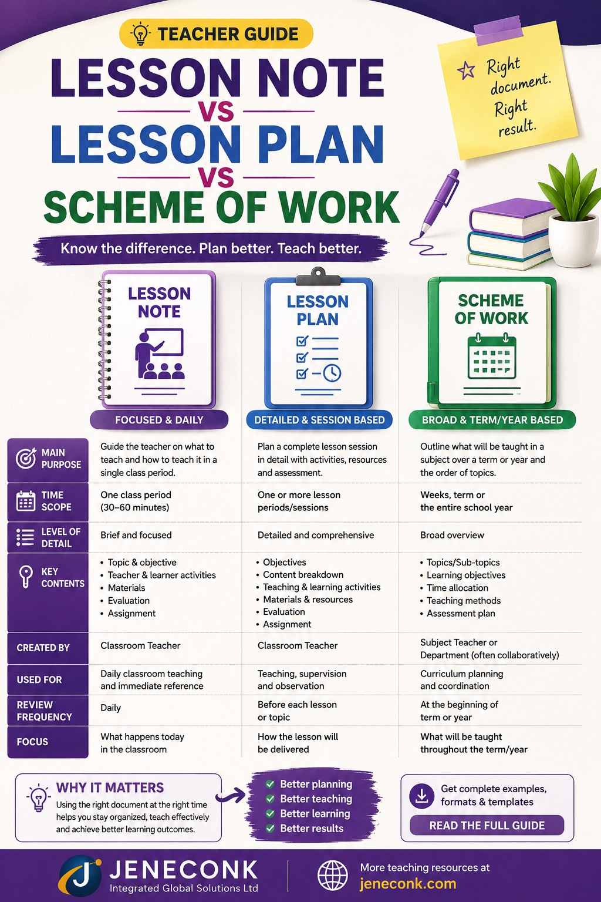
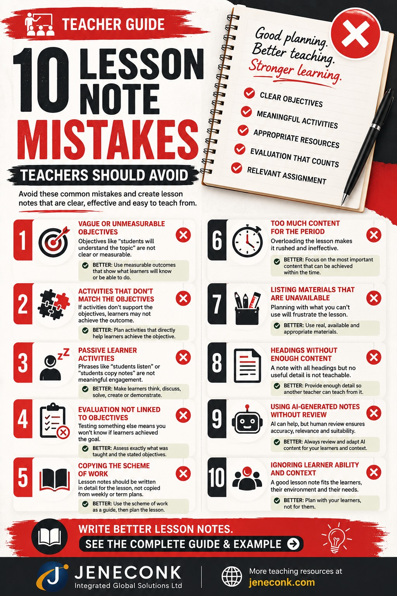

01
What Is a Lesson Note?
A lesson note is a written record of how a teacher intends to deliver a single lesson. It sets out the topic, the objectives, the materials needed, the sequence of activities, and how learning will be checked, all for one class period. In most schools it also becomes a permanent record that can be reviewed later — by the teacher preparing next term, by a colleague covering the class, or by a supervisor checking instructional quality.
The instructional purpose of a lesson note comes first: it is a working plan a teacher can actually follow while standing in front of a class. It answers practical questions in the moment — what to say first, what example to use, what question to ask if learners look confused, and what to write on the board. The administrative role is secondary. A note that exists only to be filed, with headings copied from a template but no real content underneath, fails at its primary job even if it looks complete on paper.
A well-written lesson note ties everything else in a lesson together. The objectives state what learners should be able to do by the end. The materials support those objectives. The teacher and learner activities are the actions that get learners from not knowing to knowing. The evaluation checks whether the objectives were actually met. When these pieces are written to align with each other, the lesson note becomes a genuine teaching tool rather than paperwork.
02
Why Lesson Notes Matter
Lesson notes matter for reasons that go beyond compliance:
- Organisation. Writing the note forces a teacher to think through the lesson in order, before standing in front of learners.
- Curriculum alignment. A note written against the scheme of work keeps the class on pace with what learners are expected to cover that term.
- Preparation. Materials, examples, and questions are worked out ahead of time instead of improvised.
- Time management. A note with a clear sequence and rough timing helps a teacher avoid running out of time before reaching evaluation or assignment.
- Learner participation. A note that specifies learner activities, rather than only teacher explanation, is more likely to produce an active lesson.
- Assessment. Evaluation questions written in advance are more likely to match the objectives than questions improvised at the end of the period.
- Continuity. A record of what was taught helps the next lesson build on the right starting point, and helps at the start of a new term when memory of exact coverage has faded.
- Supervision. Where lesson notes are reviewed by a head of department or supervisor, a clear note gives evidence of planning quality, not just topic coverage.
- Teacher confidence. Walking into a lesson with a written sequence reduces the pressure of deciding what to do next in real time.
- Relief or substitute teaching. Where another teacher must cover a class at short notice, a detailed note allows the lesson to continue with minimal disruption.
None of this means a longer note is automatically a better note. A short note that is specific and usable beats a long note filled with generic phrases.
03
Lesson Note vs Lesson Plan vs Scheme of Work
These three documents are related but answer different questions, and schools do not all use the terms the same way. Some institutions treat "lesson plan" and "lesson note" as interchangeable; others distinguish them clearly. It is worth confirming how your own school, ministry, or training programme defines each term before assuming the definitions below apply exactly.
| Document | Main Purpose | Time Scope | Typical Contents | Used By |
|---|---|---|---|---|
| Scheme of work | Maps curriculum content across a term or session | A full term or academic session | Weekly topics, sub-topics, and general pacing | Teachers, heads of department, curriculum planners |
| Lesson plan | A working outline of how one lesson will unfold, often personal and flexible | One lesson period | Rough sequence of activities, key questions, timing notes | The individual teacher, often as a personal working document |
| Lesson note | A fuller, more formal record of one lesson's objectives, content, and delivery | One lesson period | Objectives, previous knowledge, materials, teacher/learner activities, evaluation, assignment | Teachers, supervisors, relief teachers, school records |
In practice, the scheme of work tells a teacher what to teach each week. The lesson note (or lesson plan, depending on the school's terminology) turns that single week's topic into something a teacher can actually deliver: how the lesson opens, what examples are used, what learners do, and how understanding is checked at the end.

04
What Should a Good Lesson Note Contain?
Below is what each part of a typical lesson note means and why it matters.
Date
The specific day the lesson is delivered. This matters for record-keeping and for tracking whether the scheme of work is being followed on schedule.
Class
The exact class or grade level, for example JSS2 or SS1. This determines vocabulary level, pace, and depth of content.
Subject
The subject being taught, such as Mathematics, Biology, or English Language.
Topic
The broad area of content for the lesson, for example "Linear Equations."
Sub-topic
The narrower focus within the topic for this specific lesson, for example "Solving Linear Equations in One Variable." A topic can span several lessons; the sub-topic identifies which slice this lesson covers.
Duration
The length of the lesson period, for example 40 minutes. Duration should shape how much content is realistically attempted.
Reference materials
The textbooks, curriculum documents, or syllabi the teacher consulted while preparing the lesson. This shows the content is grounded in an approved source rather than invented on the spot.
Instructional materials
The physical or visual materials used during the lesson — charts, models, real objects, diagrams, or equipment. These should be materials the teacher can realistically access in the actual classroom.
Previous knowledge / entry behaviour
What learners already know that connects to the new topic. For example, before teaching linear equations, a teacher might confirm learners can already perform basic addition, subtraction, and simple substitution.
Learning objectives
Specific, observable statements of what learners should be able to do by the end of the lesson, for example "solve a linear equation in one variable using inverse operations."
Introduction
A short opening activity that connects previous knowledge to the new topic and captures learner interest, for example starting with a familiar balancing scenario before introducing the equals sign as balance.
Presentation / lesson development
The main body of the lesson, where new content is introduced and developed step by step, usually the longest section of the note.
Teacher activities
The specific actions the teacher takes to deliver the lesson — demonstrating, questioning, modelling, guiding practice.
Learner activities
The specific actions learners take during the lesson — answering, solving, discussing, writing, demonstrating.
Board summary
The key content the teacher writes on the board for learners to copy, usually definitions, formulas, or a worked example, kept concise enough to copy within the lesson time.
Evaluation
Questions or tasks used to check whether learners met the stated objectives, ideally attempted before the lesson ends.
Conclusion
A short recap of the main point of the lesson, often tied directly back to the objectives.
Assignment
A task learners complete after the lesson to reinforce or extend what was covered.
05
How to Write a Lesson Note Step by Step
The steps below follow the order most teachers actually work through when preparing a note, from scoping the lesson to writing the assignment.
Step 1 Identify the subject, class, topic and duration
Start by fixing the boundaries of the lesson. The class level determines how much depth is appropriate — a JSS1 class and an SS3 class studying "fractions" or "equations" will need very different levels of complexity even under a similar topic heading. The duration, usually 35 to 45 minutes at secondary level, limits how much can realistically be covered. Fixing these first prevents a note that tries to do too much or pitches content at the wrong level.
Step 2 Check the curriculum or scheme of work
A lesson note should not be written in isolation. Before writing objectives or activities, check what the scheme of work says is due for this week and this class. This keeps the lesson in sequence with what came before and what comes after, and prevents topics being taught out of order or skipped entirely.
Step 3 Identify previous knowledge
Previous knowledge is the specific skill or fact learners already have that the new lesson will build on. It is not a general statement like "learners know some mathematics" — it should be precise enough to actually use in the introduction. For a lesson on solving linear equations, previous knowledge might be stated as: "Learners can already add, subtract, multiply, and divide integers, and can substitute values into simple expressions."
Step 4 Write measurable objectives
Objectives should describe what a learner will be able to do, using a verb that can actually be observed or checked, not a mental state that cannot be directly measured.
The improved version can be checked directly: you can ask a learner to define a fraction, point to the numerator, or draw a diagram, and see immediately whether the objective was met.
Step 5 Select appropriate instructional materials
Choose materials based on:
- Relevance — the material should directly support the objective, not just decorate the lesson.
- Availability — list only what is actually accessible in the school, not equipment that exists in theory.
- Class size — a material that works for a class of 20 may not work for a class of 60; plan for the real number of learners.
- Safety — especially relevant in science and technical subjects, where materials or demonstrations must be safe for the age group.
- Usefulness — a material should make the concept clearer, not simply be present because it is expected.
Step 6 Design the introduction
A strong introduction connects what learners already know to the new topic in one or two minutes, before moving into new content. For a lesson on linear equations, a teacher might begin by asking learners to find a missing number in a simple statement such as "a number plus 5 equals 11," which learners can already do by trial, before showing that this is exactly what an equation represents.
Step 7 Develop the lesson logically
Sequence the lesson content deliberately:
- Known to new — start from what learners already understand before introducing unfamiliar ideas.
- Simple to complex — introduce the basic form of a concept before its more difficult variations.
- Concrete to abstract — use tangible examples or physical representations before moving to symbols or abstract rules, where the subject allows it.
Not every lesson needs all three, but each should be used where it genuinely helps learners follow the reasoning.
Step 8 Write teacher activities
Teacher activities should describe specific actions, not a single vague sentence.
Step 9 Write learner activities
Learner activities should describe active participation, not passive presence.
Step 10 Maintain objective-activity-assessment alignment
This is one of the most important habits in lesson-note writing. If the objective states that learners will solve problems, learners should actually practise solving problems during the lesson — not just watch the teacher solve them — before being assessed on solving problems in the evaluation. A lesson note is misaligned when the objective, the activities, and the evaluation are testing three different things.
Example 1 — Mathematics: Objective: solve a linear equation in one variable. Activity: learners solve equations on the board and in pairs. Evaluation: learners solve two new linear equations independently. All three match.
Example 2 — Biology: Objective: identify the parts of a flower and their functions. Activity: learners label a diagram of a flower and match each part to its function. Evaluation: learners label an unlabelled diagram and state one function for each part. All three match.
Example 3 — English Language: Objective: use the simple past tense correctly in sentences. Activity: learners convert present-tense sentences to past tense in guided practice. Evaluation: learners write five original sentences using the simple past tense. All three match.
When any one of the three drifts away from the others — for example, an objective about problem-solving paired with an evaluation that only tests recall of definitions — the lesson note stops functioning as a coherent plan.
Step 11 Write evaluation questions
Useful evaluation questions test the exact objective stated at the start of the lesson, can be answered within the remaining lesson time, and give the teacher a clear signal of whether the class is ready to move on. Questions that test unrelated content, or that are too difficult to attempt in the time left, do not serve their purpose. For the linear equations lesson, an evaluation might ask learners to solve two new equations similar in structure to the worked example, such as 3x − 4 = 11 and 2x + 7 = 19.
Step 12 Write the summary / conclusion
The conclusion should reinforce the single most important idea of the lesson, stated plainly, and tie back directly to the objective. For the equations lesson, this might be: "To solve a linear equation, use inverse operations to isolate the variable on one side, keeping the equation balanced at every step."
Step 13 Give a meaningful assignment
An assignment should reinforce or extend what was actually taught in the lesson — not introduce a new topic that has not yet been covered. For the equations lesson, an appropriate assignment might be five similar equations to solve at home, plus one slightly harder equation that extends the pattern learned in class.
06
How to Write Measurable Lesson Objectives
A measurable objective uses an observable verb — one that describes an action a teacher can actually see or check, rather than an internal mental state such as "understand" or "know," which cannot be verified directly within a single lesson.
Useful observable verbs include: identify, state, explain, solve, compare, classify, calculate, demonstrate, construct, and analyse. Different taxonomies group these verbs differently, and not every school or training system follows the same classification, so treat this as a practical vocabulary rather than a fixed rule.
| Subject | Weak Objective | Measurable Objective |
|---|---|---|
| Mathematics | Students will understand equations. | Learners should be able to solve a linear equation in one variable using inverse operations. |
| English | Students will know the past tense. | Learners should be able to convert five present-tense sentences into the simple past tense. |
| Biology | Students will understand photosynthesis. | Learners should be able to state the raw materials and products of photosynthesis and label the parts of a leaf involved. |
| Social Studies | Students will appreciate good citizenship. | Learners should be able to list three responsibilities of a citizen and explain why each matters to the community. |
| Computer Studies | Students will know how computers work. | Learners should be able to identify the input, processing, and output units of a computer and give one example of each. |
Prefer to start from a structured draft? Edu Suite 2.0 can help teachers generate a structured lesson-note draft in a chosen instructional format, which the teacher then reviews and adapts to their own class. It is a starting point for preparation, not a substitute for the teacher's judgement, and it does not guarantee curriculum compliance or error-free content on its own. Explore it at edu.jeneconk.com.
07
Teacher Activities vs Learner Activities
A lesson note that lists only teacher actions, with learners as passive recipients, tends to produce a passive classroom. The table below compares weak and stronger versions of the same moment in a lesson across four subjects.
| Subject | Weak Teacher / Learner Activity | Stronger Teacher / Learner Activity |
|---|---|---|
| Biology | Teacher: Explains photosynthesis. Learner: Listens. |
Teacher: Displays a leaf diagram and guides learners to identify structures involved in photosynthesis. Learner: Observe the diagram, identify structures, answer guided questions, and explain the role of each structure. |
| Mathematics | Teacher: Solves the equation on the board. Learner: Copies the working. |
Teacher: Solves one equation as a model, then poses a similar equation for learners to attempt. Learner: Attempt the second equation individually, then check steps against a partner before the teacher confirms the answer. |
| English Language | Teacher: Reads the comprehension passage aloud. Learner: Listens. |
Teacher: Reads the passage, then asks targeted comprehension questions in sequence. Learner: Follow along in the text, underline key phrases, and answer questions orally or in writing. |
| Social Studies | Teacher: Talks about community leadership. Learner: Listens. |
Teacher: Presents a short scenario involving a community decision and asks learners to identify the leadership qualities shown. Learner: Discuss the scenario in pairs and share one leadership quality identified, with a reason. |
In each stronger version, the learner is doing something observable — identifying, attempting, checking, discussing — which gives the teacher a way to see whether learning is actually happening during the lesson, not only at the end.
08
Complete Lesson Note Example
Subject: Mathematics | Class: SS1 | Topic: Linear Equations in One Variable | Sub-topic: Solving simple linear equations using inverse operations | Duration: 40 minutes | Date: [insert lesson date]
Reference materials: Approved SS1 Mathematics scheme of work; New General Mathematics for Senior Secondary Schools.
Instructional materials: Whiteboard, marker, worked-example handout, ruler for the number-balance diagram.
Previous knowledge: Learners can already add, subtract, multiply, and divide integers, and can substitute values into a simple expression.
Objectives: By the end of the lesson, learners should be able to: (1) define a linear equation in one variable, (2) solve a simple linear equation using inverse operations, and (3) verify a solution by substitution.
Introduction (5 minutes): Teacher presents the statement "a number plus 5 equals 11" and asks learners to find the missing number by reasoning alone. After learners respond, teacher shows that this statement can be written as an equation, x + 5 = 11, and that today's lesson is about finding x in statements like this in a systematic way, without guessing.
Presentation / Lesson Development
| Stage | Teacher Activity | Learner Activity |
|---|---|---|
| Defining a linear equation | Writes the definition on the board and gives two examples of linear equations and one non-example, asking learners to explain the difference. | Compare the examples, identify the variable and constant terms, and explain why the non-example does not fit the definition. |
| Introducing inverse operations | Demonstrates that addition is undone by subtraction and multiplication is undone by division, using the balance idea of keeping both sides equal. | Restate in their own words what an inverse operation does, using a simple numeric example. |
| Worked example | Solves 2x + 3 = 11 step by step on the board, narrating each step aloud. | Copy the working into their notebooks while following each step. |
| Guided practice | Poses a similar equation and circulates to support learners individually. | Attempt the new equation independently, then compare their answer with a partner. |
Worked example on the board:
2x + 3 = 11
2x + 3 − 3 = 11 − 3 (subtract 3 from both sides)
2x = 8
2x ÷ 2 = 8 ÷ 2 (divide both sides by 2)
x = 4
Verification: Substitute x = 4 back into the original equation: 2(4) + 3 = 8 + 3 = 11. Since this matches the right-hand side, x = 4 is correct.
Board summary: Definition of a linear equation in one variable; the two inverse operations used (subtraction to undo addition, division to undo multiplication); the fully worked example above.
Evaluation: Learners solve the following independently and verify their answers by substitution: 3x − 4 = 11 and 4x + 2 = 18.
Conclusion: To solve a linear equation in one variable, use inverse operations to isolate the variable on one side of the equation, applying the same operation to both sides to keep the equation balanced.
Assignment: Solve four similar equations from the class textbook exercise, and verify each answer by substitution before submitting.
Mini-Example — Basic Science
Subject: Basic Science | Class: JSS2 | Topic: States of Matter | Sub-topic: Changes of state | Duration: 35 minutes
Previous knowledge: Learners already know that matter exists as solid, liquid, and gas.
Objective: Learners should be able to name and describe melting, freezing, evaporation, and condensation, with one everyday example of each.
Teacher activity: Places a small block of ice on a plate at the start of the lesson and asks learners to observe it throughout, prompting them to describe what is happening at intervals.
Learner activity: Observe the ice, record what they notice at each interval, and match each change to its correct term by the end of the lesson.
Evaluation: Learners give one real-life example each of melting, freezing, evaporation, and condensation, different from the classroom example.
Assignment: Learners list three examples of state changes they observe at home before the next lesson and identify which type each one is.
This shorter structure shows that the same core sequence — previous knowledge, a measurable objective, an active teacher and learner activity, and an evaluation tied directly to the objective — works across subjects, not only in mathematics.
09
Different Lesson Note Formats
No single format is universally correct. Schools, ministries, and training programmes adopt different structures depending on their instructional philosophy.
- Traditional Nigerian lesson-note format — a linear document with headed sections (date, class, subject, topic, objectives, previous knowledge, presentation, evaluation, assignment), still common in many primary and secondary schools.
- Tabular format — presents the lesson development in a table with columns for time, teacher activity, and learner activity, making the sequence easier to scan at a glance.
- Learner-centred format — used in some teacher-training programmes, this format foregrounds learner outcomes and learner activities before teacher actions, reflecting a more participatory teaching philosophy.
- 5E instructional model — structures a lesson around Engage, Explore, Explain, Elaborate, and Evaluate, common in inquiry-based science teaching.
- Montessori-style planning — organised around prepared materials and self-directed learner activity rather than a fixed teacher-led sequence, common in early-years settings that follow the Montessori method.
- Microteaching format — a condensed lesson note used in teacher-training practice sessions, focused on a single narrow skill demonstrated within a short time frame, often 10 to 20 minutes.
Whichever format a school or programme uses, the underlying content — objectives, previous knowledge, activities, and evaluation aligned to each other — stays largely the same. Tools such as Edu Suite 2.0 can generate a first draft in several of these formats, which a teacher then adapts to their school's expectations.
10
Common Lesson-Note Mistakes
- Writing objectives that cannot be measured. Vague verbs such as "understand" or "appreciate" give no way to confirm whether the objective was met.
- Using activities that do not support the stated objectives. An objective about problem-solving paired with an activity that is purely lecture-based leaves learners unpractised in the actual skill being assessed.
- Evaluation questions unrelated to the lesson. Testing content that was not actually taught gives a misleading picture of learning.
- Copying the scheme of work directly into the lesson note. A scheme entry is a one-line topic; a lesson note must expand it into a deliverable, teachable sequence.
- Trying to teach too much within one period. Overloaded lessons often skip evaluation entirely because time runs out.
- Listing instructional materials that are unavailable. A note that lists a projector the school does not have is not usable on the day.
- Writing "students listen" as the main learner activity. This signals a passive lesson with no way to check participation or understanding.
- Writing notes that contain headings but not enough content to teach from. A note with every section present but each section nearly empty cannot actually guide a lesson.
- Using AI-generated notes without checking accuracy. A draft can contain content that does not fit the class level, the curriculum, or the local context unless it is reviewed.
- Ignoring learner ability and local classroom context. A note copied from a textbook without adjusting for class size, resource availability, or learner readiness may not work as written.

11
Using AI to Prepare Lesson Notes
AI tools can genuinely speed up preparation. They are useful for drafting objectives, generating example sentences or problems, suggesting activity ideas, proposing evaluation questions, and producing a first-pass summary of a topic. Used this way, AI functions as a starting point that saves time on the blank-page stage of writing a note.
What AI output should not be used for is a final, unreviewed lesson note. Before using an AI-generated draft in class, a teacher should check it for:
- Curriculum fit — does the content match what the scheme of work actually requires for this week?
- Factual accuracy — are the facts, formulas, or explanations correct?
- Class level — is the vocabulary and depth appropriate for the actual learners in the room?
- Local examples — do the examples make sense in the learners' own context, or do they need to be adapted?
- Learner ability — does the pace and difficulty match what this particular class can handle?
- Teaching time — can everything in the draft actually fit inside the lesson period?
- School policy — does the draft follow the school's expected note format and terminology?
- Inappropriate or invented content — has the AI added anything inaccurate, irrelevant, or unsuitable for the age group?
The teacher's review is what turns an AI draft into a usable lesson note. AI can accelerate preparation; it cannot substitute for a teacher's knowledge of their own classroom.
Editorial note
What We Look for in a Usable Lesson Note
Reviewing lesson notes for teacher-training programmes at JENECONK has shown a consistent pattern: a note can contain every expected heading and still be difficult to teach from. Completeness of structure is not the same as usefulness in the classroom.
When we assess whether a lesson note is genuinely usable, we look for:
- Sufficient explanation under each heading, not just a label with a one-word entry.
- Useful subject vocabulary that a learner would actually need to know.
- Meaningful worked examples, not just a definition without an illustration.
- An awareness of where learners commonly struggle with the topic.
- A teacher procedure specific enough that another qualified teacher could follow it.
- Learner activities that involve doing something, not only listening.
- A board summary a learner could copy and later study from.
- Evaluation and assignment items that test what was actually taught.
- Objective, activity, and assessment sections that clearly align with each other.
Generic placeholder phrases such as "teacher explains the topic" or "students listen attentively" do not give another teacher, or even the same teacher a term later, enough information to actually deliver the lesson. A usable lesson note should be specific enough that someone who was not in the room while it was written could still teach from it.
12
Lesson Note Quality Checklist
Use this checklist before finalising any lesson note:
- Is the topic appropriate for the class level?
- Are the objectives measurable, using observable verbs?
- Does previous knowledge genuinely connect to the new lesson?
- Are the listed materials actually available in the classroom?
- Do learner activities support the stated objectives, not just fill space?
- Is there enough explanation in each section to actually teach from?
- Are the examples and facts accurate?
- Does the evaluation test the objectives stated at the start of the lesson?
- Is the amount of content realistic for the available duration?
- If AI-assisted, has the draft been reviewed and adjusted for this class?
- Is the assignment relevant to what was actually taught?
- Could another qualified teacher pick up this note and deliver the lesson?
13
Frequently Asked Questions
What is the correct format for writing a lesson note?
There is no single universal format. Most lesson notes share the same core parts — date, class, subject, topic, duration, previous knowledge, objectives, materials, presentation, teacher and learner activities, evaluation, and assignment — but the exact layout can vary by school, ministry, training institution, or personal preference. What matters more than the format is whether the note gives enough guidance to actually teach the lesson.
What are the main parts of a lesson note?
A complete lesson note typically includes the date, class, subject, topic, sub-topic, duration, reference materials, instructional materials, previous knowledge, learning objectives, introduction, presentation or lesson development, teacher activities, learner activities, board summary, evaluation, conclusion, and assignment.
How do I write lesson objectives?
Write objectives that describe what learners will be able to do by the end of the lesson, using observable verbs such as identify, state, explain, solve, or construct. Avoid vague verbs like understand or know, since they cannot be measured directly in a single lesson.
What is previous knowledge in a lesson note?
Previous knowledge, sometimes called entry behaviour, is what learners already know or can already do that connects to the new topic. It is used at the start of the lesson to link familiar ideas to the new content.
What is the difference between a lesson note and a lesson plan?
A lesson plan is often a shorter, more flexible outline a teacher may sketch for personal use, while a lesson note is usually the fuller, more formal document that records the objectives, content, activities, and evaluation for a single lesson and is often kept for supervision or record purposes. In practice, many schools use the two terms interchangeably, so it is worth confirming how your own institution defines them.
What is the difference between a lesson note and a scheme of work?
A scheme of work covers a term or session and breaks the curriculum into weekly topics. A lesson note covers a single lesson and expands one of those topics into objectives, activities, and evaluation that a teacher can actually deliver in class.
How long should a lesson note be?
There is no fixed word count. A lesson note should be as long as it needs to be to guide the lesson clearly — long enough to contain real explanation, examples, and questions, but not padded with information the teacher will not use during the lesson.
What should I write under teacher activities?
Teacher activities should describe specific actions the teacher takes to deliver the lesson, such as demonstrating a diagram, asking guided questions, modelling a worked example, or organising a group task, rather than a single vague line like teacher explains the topic.
What should I write under learner activities?
Learner activities should describe what learners actually do, such as answering questions, solving problems on the board, labelling a diagram, or working in pairs, rather than a passive description such as students listen.
Can AI write lesson notes for teachers?
AI tools can help generate a first draft of objectives, activities, or evaluation questions, which can save preparation time. However, the teacher should always review the draft for curriculum fit, accuracy, class level, and local relevance before using it in class.
Should a lesson note contain an assignment?
Yes, most lesson notes include a short assignment that reinforces or extends what was taught, giving learners a way to practise the skill or recall the content before the next lesson.